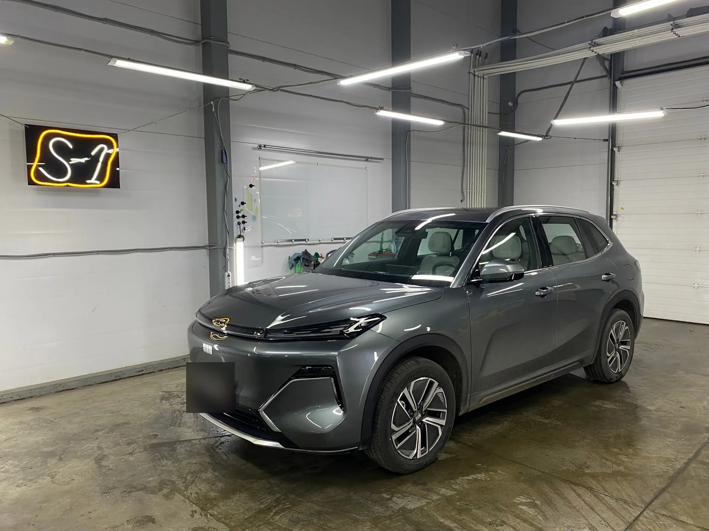
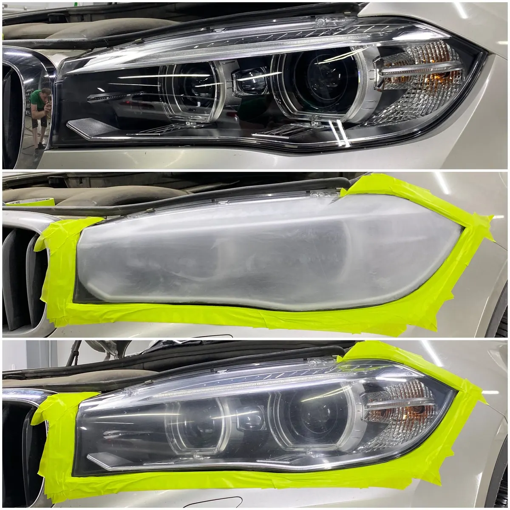
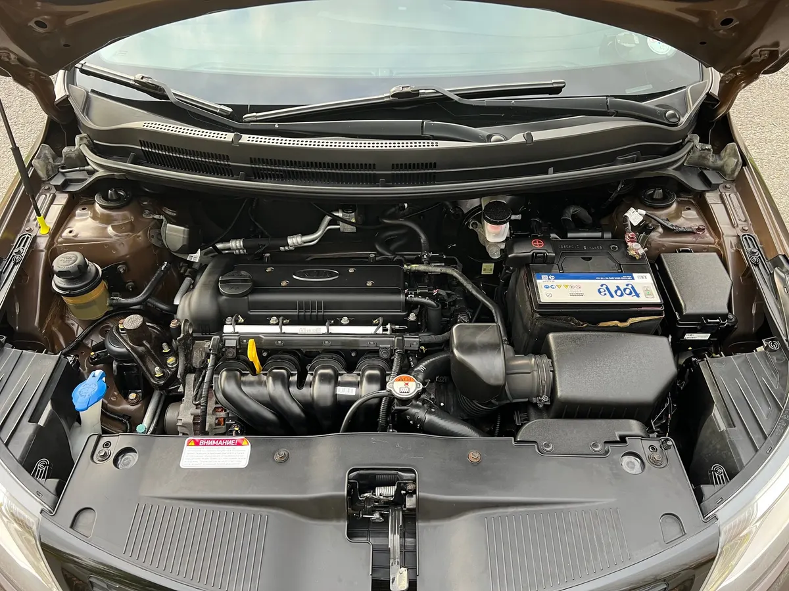
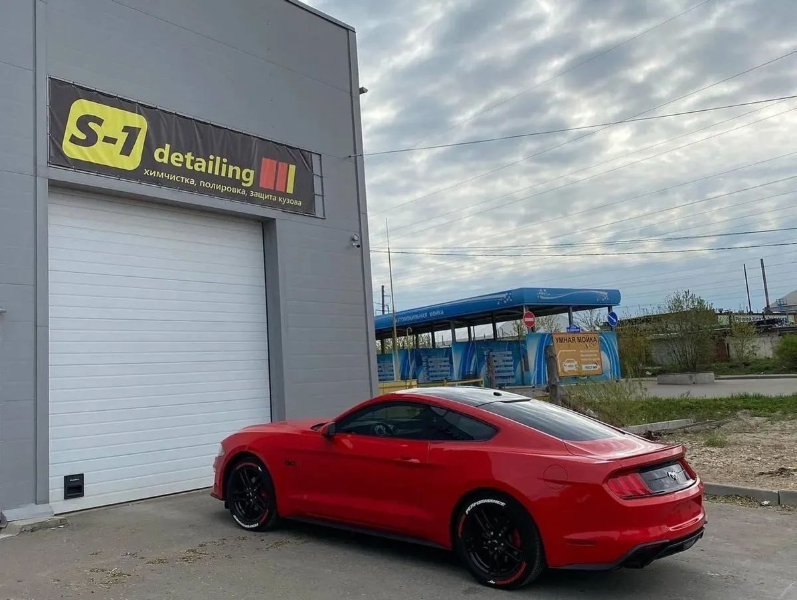

S-1 detailing · полировка, плёнка, химчистка
Детейлинг в Калуге: полировка, химчистка, защита кузова
Полировка и бронь фар, плёнка на кузов, химчистка салона. Запись на удобное время, ежедневно с 10 до 20.
- 5,0 на Яндекс Картах, 65 отзывов
- Фары, плёнка, керамика, химчистка
- Зерновая, 21, ежедневно 10-20

Как работают
Входит
- Подбор плёнки или состава под вашу задачу: объясняют, чем они отличаются
- Работа в закрытом светлом боксе на Зерновой, 21
- Оплата наличными, картой, переводом или через СБП
- Подарочный сертификат, если нужен подарок
Отдельно, если нужно
- Плёнка и керамика сверх базовой цены, если выбрали другой материал
- Дополнительные работы, о которых вы договорились отдельно
- Цены на позиции с пометкой «уточнить» - называют при записи
Цены на работы
Цены с карточки на Яндекс Картах, владелец обновлял их давно. Там, где цены нет, стоит «уточнить»: сумму называют при записи.
Кузов и оптика
- Полировка кузовацена для седана10 000 ₽
- Защитные составы на ЛКПзащита на срок от 6 месяцев до года при должном уходе4 000 ₽
- Защита бампера полиуретановой плёнкойплёнка 195 микрон18 000 ₽
- Восстановление прозрачности фар с бронированиемполировка оптики и защитная плёнкауточнить
- Оклейка полиуретаном зон рискаполиуретановая плёнка на кузовуточнить
- Керамика и жидкое стеклозащитное покрытие кузовауточнить
Салон и подкапотное
- Химчистка салонапремиальная химия12 000 ₽
- Защитные составы для кожаных элементов салонананосят на предварительно очищенную кожу5 000 ₽
- Мойка подкапотного пространствауточнить
- Антидождьуточнить
Цена зависит от марки, размера и состояния машины, точную сумму называют при записи.
Как проходит запись и работа
- 01
Написали или позвонили
Марка машины и что хотите сделать: полировку, плёнку, химчистку. Фото царапин или фар можно приложить.
- 02
Согласовали работу и срок
Подбираем материал, называем цену и время, на которое вас ждут.
- 03
Машина в боксе
Работа идёт в закрытом боксе. По отзывам: фары - от часа до четырёх, комплекс из полировки и химчистки - сутки.
- 04
Забрали готовую
Смотрите результат на месте, оплата любым удобным способом.



Что пишут клиенты
Не навязывают лишнее
«Не навязывают дополнительные услуги, для меня это огромный плюс!» - Марина Власова, октябрь 2023.
Срок называют и держат
«Сделали в озвученные сроки» - Анастасия З., май 2024; «в оговоренный срок» - O. F., август 2025.
Объясняют про материалы
«Грамотно рассказали всё про плёнки» - Даниил Д., март 2022.
Возвращаются
«Езжу к ним уже третий год» - Павел Ефимов, апрель 2024.
Отзывы с Яндекс.Карт
«Приезжал восстанавливать прозрачность фар. Все сделали классно, защитили бронепленкой. Фары как новые стали, цена за такой результат порадовала.»
Кирилл Климкин · 13 июня 2025
«Сделал полировку кузова BMW X6 , полировка оптики , бронирование фар и дверей. Результатом очень доволен.»
Дмитрий Ерёминский · 19 июня 2025
«Пользуюсь неоднократно данным детейлингом, как всегда всё превосходно! На все вопросы ответили, помогли, сделали в озвученные сроки. После химчистки салона, он стал чище нового.»
Анастасия З. · 1 мая 2024
Отзывы с карточки на Яндекс.Картах, без правок.
Частые вопросы
Сколько стоит полировка кузова?
Для седана на карточке указано 10 000 ₽, но цена давно не обновлялась. Для вашей машины сумму называют при записи: она зависит от размера и состояния кузова.
Что делаете с фарами?
Полируют оптику, восстанавливают прозрачность и защищают плёнкой (бронируют). В отзывах эту услугу заказывают чаще всего. Цену называют при записи.
Можно ли заказать только химчистку салона?
Да, химчистка салона с премиальной химией - 12 000 ₽ по прайсу на карточке. Часто её берут вместе с полировкой.
Как оплатить?
Наличными, картой, банковским переводом или через СБП. Возможна предоплата.
Можно ли записаться на конкретное время?
Да, на карточке отмечена предварительная запись. Выберите день и время выше или напишите в WhatsApp.
Когда работаете?
Ежедневно с 10:00 до 20:00, Зерновая улица, 21.
Запишитесь на полировку, плёнку или химчистку
- Адрес
- Зерновая улица, 21, Калуга
- Часы
- ежедневно 10:00-20:00
- Телефон
- +7 (915) 891-00-01